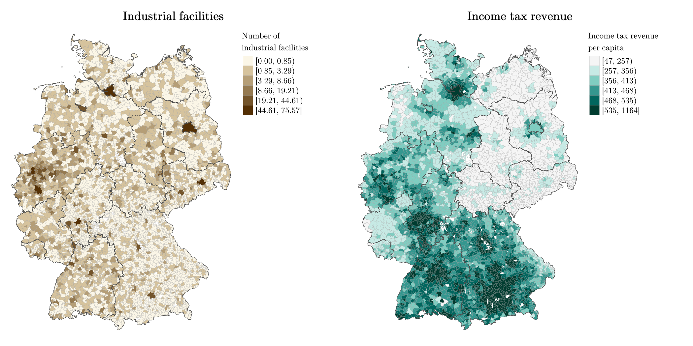

pkgs <- c("sf", "mapview", "spdep", "spatialreg", "tmap", "viridisLite") # note: load spdep first, then spatialreg
lapply(pkgs, require, character.only = TRUE)10 Spatio-temporal models
11 Comparing and Selecting Models
Required packages
Session info
sessionInfo()R version 4.3.1 (2023-06-16 ucrt)
Platform: x86_64-w64-mingw32/x64 (64-bit)
Running under: Windows 10 x64 (build 19044)
Matrix products: default
locale:
[1] LC_COLLATE=English_United Kingdom.utf8
[2] LC_CTYPE=English_United Kingdom.utf8
[3] LC_MONETARY=English_United Kingdom.utf8
[4] LC_NUMERIC=C
[5] LC_TIME=English_United Kingdom.utf8
time zone: Europe/London
tzcode source: internal
attached base packages:
[1] stats graphics grDevices utils datasets methods
[7] base
other attached packages:
[1] viridisLite_0.4.2 tmap_3.3-3 spatialreg_1.2-9
[4] Matrix_1.5-4.1 spdep_1.2-8 spData_2.2.2
[7] mapview_2.11.0 sf_1.0-13
loaded via a namespace (and not attached):
[1] xfun_0.39 raster_3.6-20 htmlwidgets_1.6.2
[4] lattice_0.21-8 vctrs_0.6.3 tools_4.3.1
[7] crosstalk_1.2.0 LearnBayes_2.15.1 generics_0.1.3
[10] parallel_4.3.1 stats4_4.3.1 sandwich_3.0-2
[13] tibble_3.2.1 proxy_0.4-27 fansi_1.0.4
[16] pkgconfig_2.0.3 KernSmooth_2.23-21 satellite_1.0.4
[19] RColorBrewer_1.1-3 leaflet_2.1.2 webshot_0.5.4
[22] lifecycle_1.0.3 compiler_4.3.1 deldir_1.0-9
[25] munsell_0.5.0 terra_1.7-29 leafsync_0.1.0
[28] codetools_0.2-19 stars_0.6-1 htmltools_0.5.5
[31] class_7.3-22 yaml_2.3.7 pillar_1.9.0
[34] MASS_7.3-60 classInt_0.4-9 lwgeom_0.2-13
[37] wk_0.7.3 abind_1.4-5 boot_1.3-28.1
[40] multcomp_1.4-24 nlme_3.1-162 tidyselect_1.2.0
[43] digest_0.6.31 mvtnorm_1.2-2 dplyr_1.1.2
[46] splines_4.3.1 fastmap_1.1.1 grid_4.3.1
[49] colorspace_2.1-0 expm_0.999-7 cli_3.6.1
[52] magrittr_2.0.3 base64enc_0.1-3 dichromat_2.0-0.1
[55] XML_3.99-0.14 survival_3.5-5 utf8_1.2.3
[58] TH.data_1.1-2 leafem_0.2.0 e1071_1.7-13
[61] scales_1.2.1 sp_1.6-1 rmarkdown_2.22
[64] zoo_1.8-12 png_0.1-8 coda_0.19-4
[67] evaluate_0.21 knitr_1.43 tmaptools_3.1-1
[70] s2_1.1.4 rlang_1.1.1 Rcpp_1.0.10
[73] glue_1.6.2 DBI_1.1.3 jsonlite_1.8.5
[76] R6_2.5.1 units_0.8-2 Elhorst (2014) provides a comprehensive introduction to spatial panel data methods. Article length introduction to spatial panel data models (FE and RE) can be found in Elhorst (2012), Millo and Piras (2012) and Croissant and Millo (2018). LeSage (2014) discusses Bayesian panel data methods.
Note that we will only discuss some basics here, as the complete econometrics of these models and their estimation strategy become insanely complicated (Lee and Yu 2010).
11.1 Static panel data models
The idea behind a static panel data with auto-regressive term is similar to the cross sectional situation (Millo and Piras 2012).
\[ {\boldsymbol{\mathbf{y}}}= +\rho(\boldsymbol{\mathbf{I}}_T\otimes {\boldsymbol{\mathbf{W}}_N}){\boldsymbol{\mathbf{y}}}+{\boldsymbol{\mathbf{X}}}{\boldsymbol{\mathbf{\beta}}}+ {\boldsymbol{\mathbf{u}}}. \]
where \(\otimes\) is the Kronecker product (block-wise multiplication).
\[ \begin{split} \underbrace{\underbrace{\boldsymbol{\mathbf{I}}_T}_{T \times T} \otimes \underbrace{\boldsymbol{\mathbf{W}}_N}_{N \times N}}_{NT \times NT}= \begin{pmatrix} 1 & 0 & \cdots & 0 \\ 0 & 1 & \cdots & 0 \\ \vdots & \vdots & \ddots & \vdots \\ 0 & 0 & \cdots & 1 \end{pmatrix} \left[\begin{array}{cccc} v_{1} w_{1} & v_{1} w_{2} & \cdots & v_{1} w_{m} \\ v_{2} w_{1} & v_{2} w_{2} & \cdots & v_{2} w_{m} \\ \vdots & \vdots & \ddots & \vdots \\ v_{n} w_{1} & v_{n} w_{2} & \cdots & v_{n} w_{m} \end{array}\right] =\\ \begin{pmatrix} \left[\begin{array}{cccc} v_{1} w_{1} & v_{1} w_{2} & \cdots & v_{1} w_{m} \\ v_{2} w_{1} & v_{2} w_{2} & \cdots & v_{2} w_{m} \\ \vdots & \vdots & \ddots & \vdots \\ v_{n} w_{1} & v_{n} w_{2} & \cdots & v_{n} w_{m} \end{array}\right] & 0 & \cdots & 0 \\ 0 & \left[\begin{array}{cccc} v_{1} w_{1} & v_{1} w_{2} & \cdots & v_{1} w_{m} \\ v_{2} w_{1} & v_{2} w_{2} & \cdots & v_{2} w_{m} \\ \vdots & \vdots & \ddots & \vdots \\ v_{n} w_{1} & v_{n} w_{2} & \cdots & v_{n} w_{m} \end{array}\right] & \cdots & 0 \\ \vdots & \vdots & \ddots & \vdots \\ 0 & 0 & \cdots & \left[\begin{array}{cccc} v_{1} w_{1} & v_{1} w_{2} & \cdots & v_{1} w_{m} \\ v_{2} w_{1} & v_{2} w_{2} & \cdots & v_{2} w_{m} \\ \vdots & \vdots & \ddots & \vdots \\ v_{n} w_{1} & v_{n} w_{2} & \cdots & v_{n} w_{m} \end{array}\right] \end{pmatrix} \end{split} \]
Here we model only spatial dependence within each cross-section and multiply the same spatial weights matrix \(T\) times. Off block-diagonal elements are all zero. So there is no spatial dependence that goes across time.
The error term can be decomposed into two parts:
\[ {\boldsymbol{\mathbf{u}}}= (\boldsymbol{\mathbf{\iota}}_T \otimes {\boldsymbol{\mathbf{I}}_N})\boldsymbol{\mathbf{\mu}}+ {\boldsymbol{\mathbf{\nu}}}, \]
where \(\boldsymbol{\mathbf{\iota}}_T\) is a \(T \times 1\) vector of ones, \({\boldsymbol{\mathbf{I}}_N}\) an \(N \times N\) identity matrix, \(\boldsymbol{\mathbf{\mu}}\) is a vector of time-invariant individual specific effects (not spatially autocorrelated).
We could obviously extent the specification to allow for error correlation by specifying
\[ {\boldsymbol{\mathbf{\nu}}}= \lambda(\boldsymbol{\mathbf{I}}_T \otimes {\boldsymbol{\mathbf{W}}_N})\boldsymbol{\mathbf{\nu }}+ {\boldsymbol{\mathbf{\varepsilon}}}. \]
The individual effects can be treated as fixed or random.
Fixed Effects
In the FE model, the individual specific effects are treated as fixed. If we re-write the equation above, we derive at the well-know fixed effects formula with an additional spatial autoregressive term:
\[ {y_{it}}= \rho\sum_{j=1}^Nw_{ij}y_{jt} + \boldsymbol{\mathbf{x}}_{it}\boldsymbol{\mathbf{\beta }}+ \mu_i + \nu_{it}, \] where \(\mu_i\) denote the individual-specific fixed effects.
As with the standard spatial lag model, we cannot rely on the OLS estimator because of the simultaneity problem. The coefficients are thus estimated by maximum likelihood (Elhorst 2014).
Random Effects
In the RE model, the individual specific effects are treated as components of the error \(\mu \sim \mathrm{IID}(o, \sigma_\mu^2)\). The model can then be written as
\[ \begin{split} {\boldsymbol{\mathbf{y}}}= +\rho(\boldsymbol{\mathbf{I}}_T\otimes {\boldsymbol{\mathbf{W}}_N}){\boldsymbol{\mathbf{y}}}+{\boldsymbol{\mathbf{X}}}{\boldsymbol{\mathbf{\beta}}}+ {\boldsymbol{\mathbf{u}}}, \\ {\boldsymbol{\mathbf{u}}}= (\boldsymbol{\mathbf{\iota}}_T \otimes {\boldsymbol{\mathbf{I}}_N})\boldsymbol{\mathbf{\mu}}+ [\boldsymbol{\mathbf{I}}_T \otimes (\boldsymbol{\mathbf{I}}_N - \lambda{\boldsymbol{\mathbf{W}}_N})]^{-1} {\boldsymbol{\mathbf{\varepsilon}}}. \end{split} \]
As with the conventional random effects model, we make the strong assumption that the unobserved individual effects are uncorrelated with the covariates \(\boldsymbol{\mathbf{X}}\) in the model.
11.2 Dynamic panel data models
11.2.1 Impacts in spatial panel models

11.3 Example: Industrial facilities and municipal income
Rüttenauer and Best (2021): Environmental Inequality and Residential Sorting in Germany: A Spatial Time-Series Analysis of the Demographic Consequences of Industrial Sites. Demography, 58(6), 2243–2263. https://doi.org/10.1215/00703370-9563077
